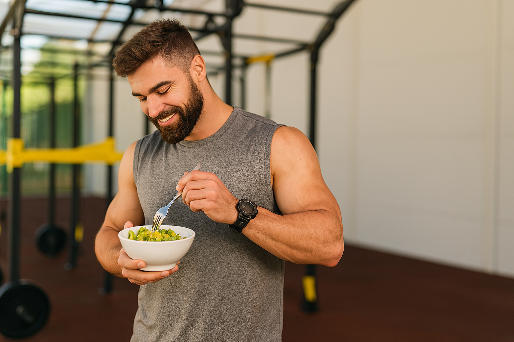

La dieta para deportistas de alto rendimiento juega un papel crucial para su óptima performance. Una dieta adecuada no solo mejora el rendimiento físico, sino que también ayuda en la recuperación y previene lesiones. En este artículo, te explicamos qué debe comer un deportista de alto rendimiento, los tipos de nutrición deportiva y los alimentos que deben evitarse.

Para optimizar el rendimiento, la dieta de un deportista de alto rendimiento debe ser equilibrada y rica en nutrientes. Aquí te dejamos algunos componentes esenciales:
1.Carbohidratos: Son la principal fuente de energía. Los deportistas deben consumir carbohidratos complejos como cereales integrales, arroz, pasta, y legumbres. Estos alimentos ayudan a mantener los niveles de glucógeno en los músculos.
2.Proteínas: Esenciales para la reparación y crecimiento muscular. Las fuentes de proteínas recomendadas incluyen carnes magras, pollo, pescado, huevos, productos lácteos bajos en grasa, y legumbres.
3.Grasas saludables: Las grasas también son una fuente importante de energía, especialmente en actividades de larga duración. Se deben priorizar las grasas insaturadas presentes en el aceite de oliva, aguacates, nueces y pescados grasos como el salmón.
4.Vitaminas y minerales: Las frutas y verduras son indispensables, ya que aportan vitaminas y minerales esenciales para el correcto funcionamiento del cuerpo. Las espinacas, zanahorias, naranjas y plátanos son excelentes opciones.
5.Hidratación: El agua es fundamental para mantener el equilibrio de líquidos y electrolitos en el cuerpo. Es importante beber suficiente agua antes, durante y después del ejercicio.
Existen diferentes enfoques en la nutrición deportiva, adaptados a las necesidades específicas de cada deportista:
1.Nutrición para la resistencia:Focalizada en deportes de larga duración como el maratón o el ciclismo. Se enfatiza el consumo de carbohidratos antes y durante la actividad para mantener los niveles de energía.
2.Nutrición para la fuerza: Para deportes que requieren potencia y fuerza muscular, como el levantamiento de pesas. Aquí, las proteínas son fundamentales para la recuperación y el crecimiento muscular.
3.Nutrición para la recuperación: Post-entrenamiento o competencia, es crucial para la reparación de tejidos y reabastecimiento de energía. Incluye una combinación de carbohidratos y proteínas dentro de las dos horas posteriores al ejercicio.
4.Nutrición en deportes de equipo:En deportes como el fútbol o baloncesto, la dieta debe ser equilibrada y variada para cubrir las demandas de energía, fuerza y resistencia.
Así como hay alimentos que potencian el rendimiento, hay otros que deben evitarse:
1.Comida rápida y procesada: Alta en grasas saturadas, azúcares y sodio, puede afectar negativamente el rendimiento y la salud en general. Ejemplos son las hamburguesas, papas fritas y refrescos.
2.Azúcares refinados: Los dulces, pasteles y bebidas azucaradas pueden causar picos de energía seguidos de caídas bruscas, afectando la consistencia en el rendimiento.
3.Alcohol: Interfiere con la recuperación muscular y la hidratación, además de afectar la coordinación y el tiempo de reacción.
4.Grasas trans: Presentes en productos horneados y alimentos fritos, pueden aumentar el riesgo de enfermedades cardíacas y reducir la eficiencia del sistema cardiovascular.
Una dieta para deportistas de alto rendimiento debe ser cuidadosamente planificada para asegurar un suministro adecuado de energía, promover la recuperación y mantener la salud general. Evitar alimentos procesados y azucarados, y centrarse en carbohidratos complejos, proteínas magras y grasas saludables es clave para alcanzar el máximo potencial atlético.

Estas son unas galletas de avena muy saludables y fáciles, ideales…
24/05/2025 Leer más
La dieta para deportistas de alto rendimiento juega un papel crucial para…
24/05/2025 Leer más
Elegir una dieta antiinflamatoria es clave para prevenir y combatir la inflamación que…
24/05/2025 Leer más
Estas galletas de calabaza se han vuelto una de mis recetas favoritas. Te prometo que te van a encantar…
24/05/2025 Leer más
Este smoothie es una excelente manera de comenzar el…
24/05/2025 Leer más
Esta ensalada con naranja, queso de cabra y pistachos, aportan…
24/05/2025 Leer más